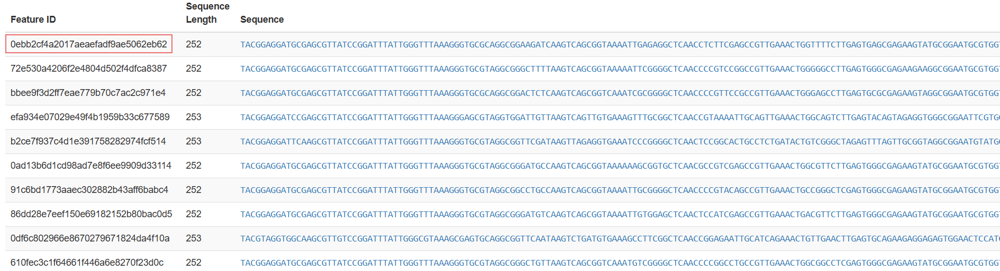
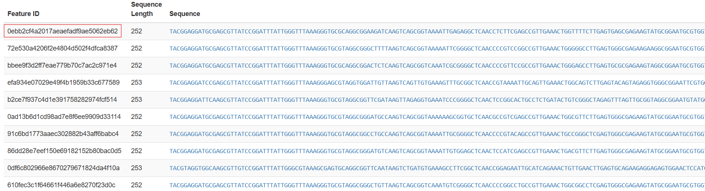

Raw sequencing data (FASTQ files) is assessed for quality using FastQC and MultiQC to detect adapter contamination, low-quality reads, or GC bias.


Adapters, low-quality bases, and technical artifacts are removed using Trimmomatic or fastp to improve downstream analyses.


QIIME 2 transforms high-quality sequencing reads into microbial profiles, denoising sequences, identifying ASVs, assigning taxonomy, evaluating diversity, and visualizing results.
Preprocessing includes demultiplexing, primer removal, and paired-end read joining. Generates QIIME 2 reports with per-base quality and read counts.


Denoising corrects errors and recovers high-resolution ASVs. Uses DADA2 in QIIME 2 to generate feature tables, representative sequences, and statistics.

 


View Feature Table | View Representative Sequences | View Statistics Report
Assigns taxonomy to ASVs using curated reference databases. Produces taxonomy tables, search results, and interactive barplots.


View Taxonomy Table | View Search Results | View Taxonomy Barplot
Calculates alpha and beta diversity metrics using phylogeny-aware analyses. Generates rarefaction curves, PCoA plots, and other diversity visualizations.